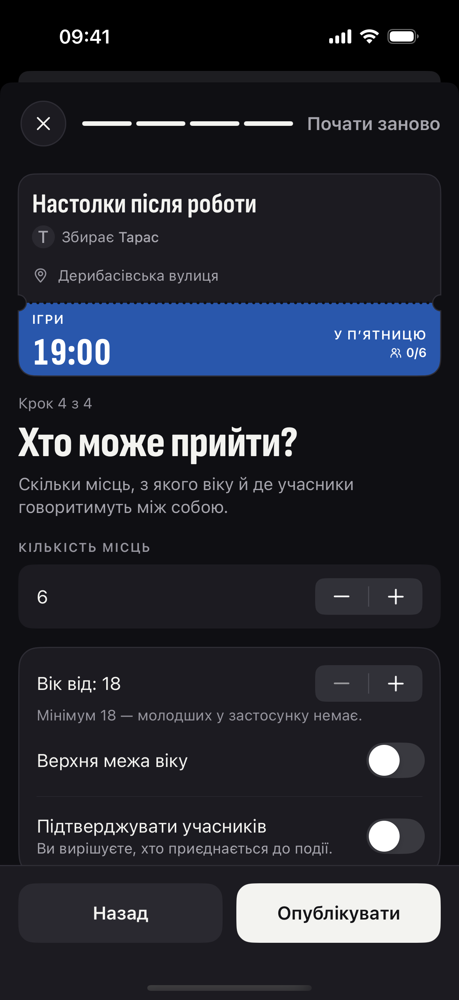

у місті —
сотні подій.
а твоєї — нема.
+
Організувати подію
Настолки після роботи
Т
Збирає Тарас
Дерибасівська вулиця
ІГРИ
19:00
У ПʼЯТНИЦЮ
0/6
Поряд
Є куди. Буде з ким.
тоді друкуєш свою.
Що плануєте?
Де зустрічаємось?
Коли?
Хто може прийти?

квиток збирається,поки заповнюєш
публікуєш —і до тебе можуть долучитися
що надрукуєш першим? 👇
безкоштовно
Apple, логотип Apple і App Store є торговельними марками Apple Inc.
Google Play і логотип Google Play є торговельними марками Google LLC.